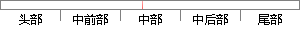

这种策略被称为提前终止，它是深度学习中最常用的正则化形式，并且十分简单有效。
片段位置图

相似结果|
1
原句片段：这种策略被称为提前终止，它是深度学习中最常用的正则化形式，并且十分简单有效。
相似片段 1：这种策略被称为提前终止(early stopping)。由于它的有效性和简单性,这可能是深度学习中最常用的正则化形式。 提前终止是一种非常不显眼的正则化形式,几乎不需要...
相似片段 2：深度学习中最常用的正则化形式——有效性和简单性,...两种策略: 再次初始化模型,使用第一轮提前终止训练...Dropout不仅仅是训练一个Bagging的集成模型,并且是共享...
|
※ 片段修改建议 ※
近似词参考：- 这种：这类
- 策略：计谋
- 提前：提早
- 终止：停止
- 学习：进修
- 常用：经常使用
- 形式：情势
- 并且：而且
- 十分：非常
- 简单：简略 简朴
- 有效：有用
系统自动生成语句：这类计谋被称为提早停止，它是深度进修中最经常使用的正则化情势，而且非常简略有用。
注：本片段修改建议为系统自动生成，仅供参考。